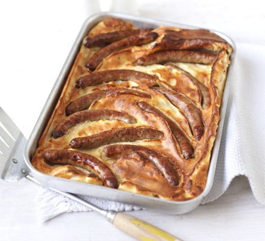

Toad in the hole

Description
A wholesome and hearty toad in the hole recipe. Nestle your favourite sausages in soft pillowy yorkshire pudding.
Serve with gravy and greens.
Ingredients
- 8 sausages
- 1 tbsp vegetable oil
- 140g plain flour
- 2 eggs
- 175ml semi-skimmed milk
Method
- Heat the oven to 220C/200C fan/gas 7. Put the sausages in a 20 x 30cm roasting tin with the oil and bake for 15 mins until browned.
- Meanwhile, make the batter. Tip the flour into a bowl with ½ tsp salt, make a well in the middle and crack the eggs into it. Use an electric whisk to mix it together, then slowly add the milk, whisking all the time. Leave to stand until the sausages are nice and brown.
- Remove the sausages from the oven – be careful because the fat will be sizzling hot – but if it isn’t, put the tin on the hob for a few minutes until it is.
- Pour in the batter mix, transfer to the top shelf of the oven, then cook for 25-30 mins, until risen and golden. Serve with gravy and your favourite veg.